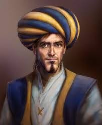

Ibn al-Haytham
Présentation
| Nom | Ibn al-Haytham |
| Nom complet | Abu Ali al-Hasan ibn al-Hasan ibn al-Haytham |
| Année de naissance | vers 965 |
| Lieu de naissance | Bossora (en Irak) |
| Décès | vers 1040 |
| Innovation célèbre | Théorie de l'optique |
Biographie
Dans sa tendre jeunesse, Alhazen bénéficia d’une excellente éducation dans sa ville natale. Il étudia la philosophie, la théologie, les mathématiques et la physique. Tout au long de ses études, il consulta des ouvrages de célèbres savants grecs tels qu’Euclide, Archimède, Ptolémée et Héron d’Alexandrie. Plus tard, il s’installa au Caire à l’invitation du calife fatimide Al-Hâkim pour étudier la faisabilité d’un projet visant à réguler les crues du Nil. Cependant, constatant que le projet était irréalisable avec les moyens techniques de son époque, il se fit passer pour un fou afin d’éviter les représailles du calife, connu pour ses décisions imprévisibles et parfois cruelles. Malgré cette mésaventure, il poursuivit ses études avec détermination et rédigea de nombreux ouvrages en résidence surveillée, laissant derrière lui un héritage scientifique et philosophique qui allait marquer les siècles à venir..
De la détention à l'optique révolutionnaire
Pendant sa détention, Alhazen rédigea plusieurs ouvrages, notamment dans le domaine de l’optique, où il apporta des révolutions majeures. Surnommé le “père de l’optique moderne”, il s'intéressa à la lumière, aux couleurs, à la vision binoculaire, à la théorie de l’intromission, à l'illusion lunaire, ainsi qu’aux lentilles sphériques. Pionnier de la méthode scientifique, il validait ses découvertes par des expériences rigoureuses, souvent accompagnées de démonstrations mathématiques pour appuyer ses hypothèses. Cette approche innovante, qui combinait observation, expérimentation et raisonnement logique, posa les bases de la méthode scientifique moderne. Il rédigea le Kitab fil Manazir (traité d'optique), une œuvre monumentale où il regroupa ses plus grandes découvertes. Cette œuvre en sept volumes, rédigée entre 1015 et 1021, traite de divers domaines scientifiques tels que la nature de la lumière, la formation des images, les phénomènes de réflexion et de réfraction, et même des aspects psychologiques liés à la perception visuelle. En outre, il y développa des concepts tels que la vision binoculaire et les illusions d'optique, ouvrant la voie à de nombreuses avancées futures dans les sciences de la vision. Ce traité influença non seulement les chercheurs musulmans, mais également les scientifiques européens des siècles suivants, tels que Kepler, Descartes et Newton.
Principaux ouvrages d'Alhazen
- Kitab al-Manazir (Traité d'optique)
- Fi al-Daw' (Discours sur la lumière)
- Fi al-Marayā al-Muḥriqah bil-Dawair (Les miroirs ardents sphériques)
- Fi al-Marayā al-Muḥriqah bil-Qitu' (Les miroirs ardents paraboliques)
- Fi al-Kār al-Muḥriqah (La sphère ardente)
- Fi al-Hāl wa Qaws Quzah (Le halo et l'arc-en-ciel)
- Fi Kayfiyat al-Zillāl (La formation des ombres)
Le traité d'optique

Explorez davantage la théorie de l'optique d'Alhazen :
Le Traité d'optique d'Ibn al-Haytham